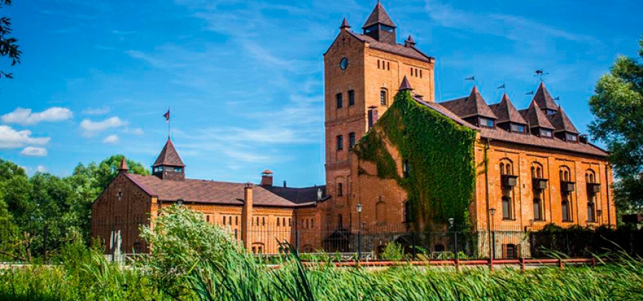
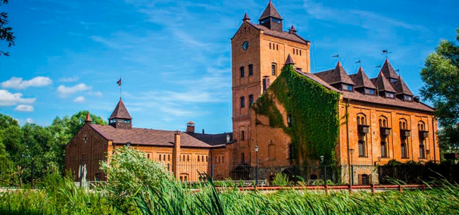
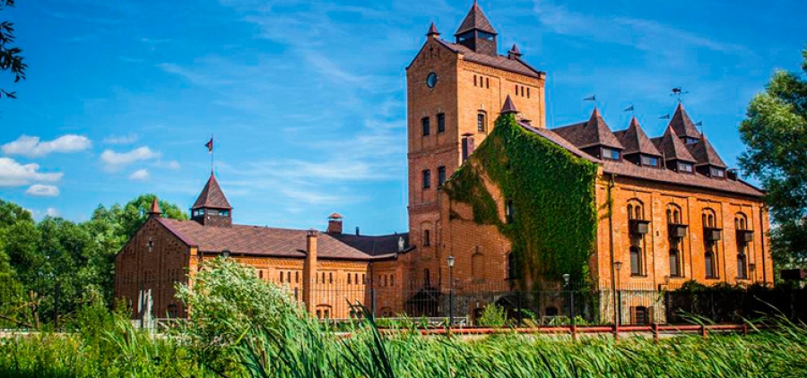
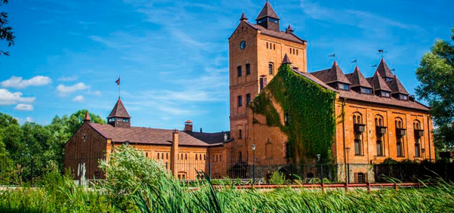

«Замок-музей Радомисль» – це архітектурна та історико-культурна перлина поліського краю. У 1612 році на цьому місці було збудовано «папірню» – укріплену фабрику з виробництва паперу для друкарні Києво-Печерської Лаври. Саме на цьому папері був надрукований церковний збірник "Часослов", перша надрукована в Києві книга.
Величний архітектурний ансамбль, розташований між двома водоспадами, з одного боку омивається водами річки Мики, з іншого – величезним чистим озером. Навколо, як і тисячу років тому – хвойні ліси, що насичують повітря лікувальними ефірними оліями.
Сьогодні «Замок-музей Радомисль» являє собою повністю відновлену середньовічну фортифікаційну споруду з відтворенням автентичних інтер’єрів XVII-XIX ст. Замок загальною площею 2500 кв. м. не має рукотворного фундаменту, він збудований на гранітній скелі, що уходить вглиб землі на кілометри, і здатний простояти століття. Всередині замку, завдяки товстим кам’яним стінам, цілий рік зберігається однакова температура +18°. Тут все вражає духом давнини. Величні мури, дубові перекриття під стелями, балкони в концертній залі та бійниці, через які оборонці колись відстрілювалися від нападників.
Обов'язково слід побувати на екскурсії в музеї домашньої ікони, прогулятися ландшафтним парком серед каналів, містків і старовинних статуй, посидіти на лавці "чоловічої сили", смачно пообідати у трапезній із старовинною піччю під звуки фісгармонії.
.jpg) 


